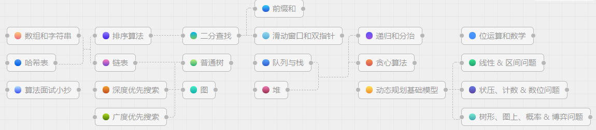
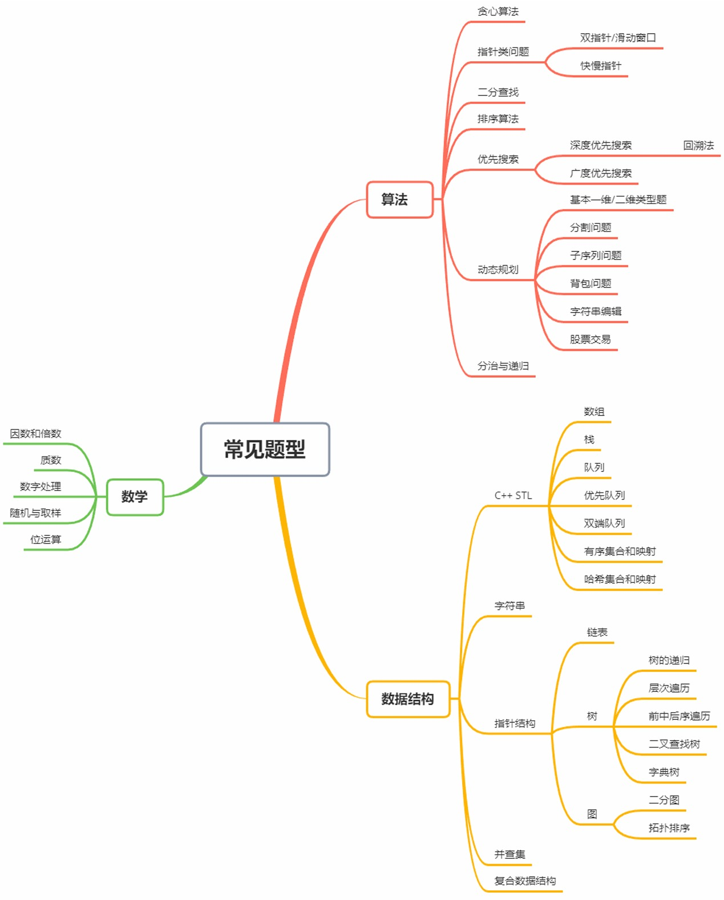
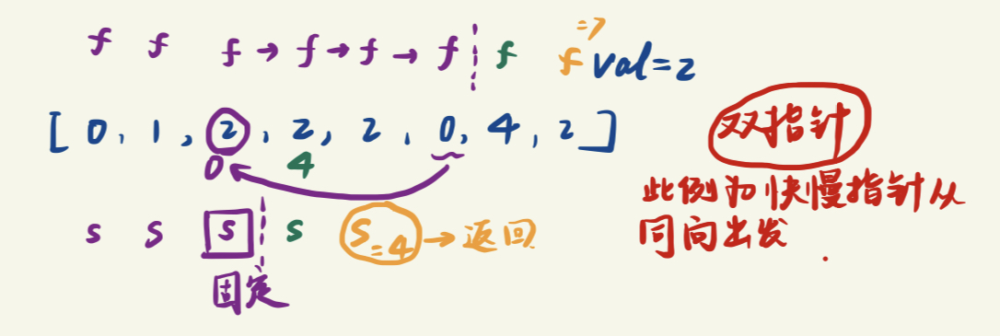

⭐️ ⭐️ Leetcode历程
〇 LeetCode规划


一 常见问题总结 1 常用函数 涉及Vector容器
对vector排序
sort()
获取vector长度
2 一个算法耗时的优化：ios::sync_with_stdio(false) 这个点的获得来自于：在刷题时，看到有算法耗时低的离谱的答案。代码如下：
1 2 3 4 5 6 7 8 9 10 11 12 13 14 15 16 17 18 19 20 21 22 23 24 25 26 27 28 29 30 31 class Solution {public : Solution (){ ios::sync_with_stdio (false ); cin.tie (nullptr ); cout.tie (nullptr ); } int findContentChildren (vector<int >& g, vector<int >& s) ranges::sort (g); ranges::sort (s); int j = 0 ,ret = 0 ; int max = s.size (); for (auto & i:g){ if (j >= max) break ; else if (s[j] >= i) ret ++; else { while ( j < max){ if (s[j] >= i){ ret ++; break ; } j ++; } } j++; } return ret; } };
从而引入 ios::sync_with_stdio(false)，下面细说这玩意。
在C++中的输入和输出有两种方式，一种是scanf和printf，另一种是cin和cout。在#include<bits/stdc++.h>这个万能头文件下，这两种方式是可以互换的。但是，cin和cout的输入和输出效率比第一种低。
这是因为它先把要输出的东西存入缓冲区，再输出，导致效率降低，而这段语句可以来打消iostream的输入输出缓存，可以节省许多时间，使效率与scanf与printf相差无几。还应注意的是，scanf与printf使用的头文件应是stdio.h，而不是 iostream。
从本质上讲，这段语句是一个iostream与stdio流的同步的开关。C++为了兼容C，保证程序在使用了std::printf和std::cout的时候不发生混乱，将输出流同步到了一起。cin和cout要与stdio同步，中间会有一个缓冲，所以导致cin和cout语句输入输出缓慢。而使用这个语句，就可以取消cin、cout与stdio的同步，说白了就是提速，效率基本与scanf和printf一致。
总结：
std::sync_with_stdio(false);：这是一个是否兼容stdio的开关，C++为了兼容C，保证程序在使用了std::printf和std::cout的时候不发生混乱，将输出流绑在了一起。std::cin.tie(nullptr); ：解除的是C++运行库层面的对数据传输的绑定。二 最易懂的贪心贪心算法 三 玩转双指针 四 居合斩！二分查找 五 千奇百怪的排序算法 六 一切皆可搜索 七 深入浅出动态规划 八 化繁为简的分治法 九 巧解数学问题 十 神奇的位运算 十一 妙用数据结构 难度：简单 1 两数之和 1 2 3 输入：nums = , target = 9 输出： 解释：因为 nums + nums == 9 ，返回
1 2 3 4 5 6 7 8 9 10 11 12 13 14 15 16 17 class Solution {public : vector<int > twoSum (vector<int >& nums, int target) { vector<int > vec; for (int i = 0 ; i < nums.size (); i++) { for (int j = i + 1 ; j < nums.size (); j++) { if (nums[i] + nums[j] == target) { vec.push_back (i); vec.push_back (j); return vec; } } } return vec; } };
9ms
1 2 3 4 5 6 7 8 9 10 11 12 13 14 15 16 17 18 19 20 21 class Solution {public : vector<int > twoSum (vector<int >& nums, int target) { unordered_map<int ,int > ump; int n = nums.size (); for (int i = 0 ;i<n;i++) { int temp = target - nums[i]; if (ump.count (temp)) { return vector<int > {ump[temp],i}; } else { ump[nums[i]] = i; } } return vector<int > {1 ,2 }; } };
unordered_map是C++ 11正式加入的对hash_map的官方实现。详细见STL
26. 删除有序数组中的重复项 给你一个 非严格递增排列 的数组 nums ，请你原地 删除重复出现的元素，使每个元素 只出现一次 ，返回删除后数组的新长度。元素的 相对顺序 应该保持 一致 。然后返回 nums 中唯一元素的个数。
示例 1：
1 2 3 输入：nums = 输出：2, nums = 解释：函数应该返回新的长度 2 ，并且原数组 nums 的前两个元素被修改为 1, 2 。不需要考虑数组中超出新长度后面的元素。
示例 2：
1 2 3 输入：nums = [0,0,1,1 ,1,2,2,3 ,3 ,4 ] 输出：5 , nums = [0,1,2,3 ,4 ] 解释：函数应该返回新的长度 5 ， 并且原数组 nums 的前五个元素被修改为 0 , 1 , 2 , 3 , 4 。不需要考虑数组中超出新长度后面的元素。
解答
为什么内存占用很高？
1 2 3 4 5 6 7 8 9 10 11 12 13 14 15 16 17 18 19 20 21 22 23 24 25 26 27 28 29 30 31 32 33 34 35 #include <iostream> #include <vector> using namespace std;class Solution {public : int removeDuplicates (vector<int >& nums) int len = nums.size (); if (len==0 || len==1 ) return len; int slow = 0 ; int fast = 1 ; while (fast < len) { if (nums[fast] != nums[slow]) { nums[++slow] = nums[fast]; } fast++; } return slow + 1 ; } }; int main () vector<int > v{ 1 ,2 ,3 ,3 }; Solution s; int size = s.removeDuplicates (v); std::cout << "result:" << size << std::endl; for (vector<int >::iterator it = v.begin (); it != v.end (); it++) { cout << *it << " " ; } }
参考
1 2 3 4 5 6 7 8 9 10 11 12 13 14 15 16 17 18 19 20 21 class Solution {public : int removeDuplicates (vector<int >& nums) int n = nums.size (); if (n == 0 ) { return 0 ; } int fast = 1 , slow = 1 ; while (fast < n) { if (nums[fast] != nums[fast - 1 ]) { nums[slow] = nums[fast]; ++slow; } ++fast; } return slow; } };
27. 移除元素 给你一个数组 nums 和一个值 val，你需要 原地 移除所有数值等于 val 的元素，并返回移除后数组的新长度。
不要使用额外的数组空间，你必须仅使用 O(1) 额外空间并 原地 修改输入数组 。
元素的顺序可以改变。你不需要考虑数组中超出新长度后面的元素。
解答：
自己的打补丁解法，真丢人
1 2 3 4 5 6 7 8 9 10 11 12 13 14 15 16 17 18 19 20 21 22 23 24 25 26 27 28 29 30 31 32 33 34 35 36 37 38 39 40 41 42 43 44 45 46 47 48 49 50 51 52 53 54 55 56 57 58 59 #include <iostream> #include <vector> using namespace std;class Solution {public : int removeElement (vector<int >& nums, int val) unsigned len = nums.size (); unsigned begin{ 0 }; unsigned end = len - 1 ; if (!len) return 0 ; while (begin < end) { while (nums[begin] != val && begin < end) { begin++; std::cout << "begin++" << std::endl; } if (begin == end) { if (nums[begin] == val) return len - 1 ; else return len; } while (nums[end] == val && begin < end) { end--; len--; if (end == 0 ) return 0 ; std::cout << "end--" << len << std::endl; } if (begin != end) { nums[begin++] = nums[end--]; len--; std::cout << "begin:" << begin << "end:" << end << " len--:" << len << std::endl; } } if (begin == end && nums[begin] == val) { len--; } return len; } }; int main () vector<int > v{ 4 ,5 }; Solution s; int size = s.removeElement (v, 5 ); std::cout << "result:" << size << std::endl; for (vector<int >::iterator it = v.begin (); it != v.end (); it++) { cout << *it << " " ; } }
参考解答：
1 2 3 4 5 6 7 8 9 10 11 12 13 14 15 16 17 18 class Solution {public : int removeElement (vector<int >& nums, int val) if (nums.size () == 0 ) return 0 ; int slow = 0 ; int fast = 0 ; while (fast < nums.size ()){ if (nums[fast] != val){ nums[slow] = nums[fast]; slow++; } fast++; } return slow; } };
获得灵感：自解中的begin其实就是需要return的长度

35. 搜索插入位置 给定一个排序数组和一个目标值，在数组中找到目标值，并返回其索引。如果目标值不存在于数组中，返回它将会被按顺序插入的位置。
请必须使用时间复杂度为 O(log n) 的算法。
示例 1:
1 2 输入: nums = [1,3,5,6], target = 5 输出: 2
示例 2:
1 2 输入: nums = [1,3,5,6], target = 2 输出: 1
示例 3:
1 2 输入: nums = [1,3,5,6], target = 7 输出: 4
解答：
1 2 3 4 5 6 7 8 9 10 11 12 13 14 15 16 17 18 19 20 21 22 23 24 25 26 27 28 29 30 31 32 33 34 35 36 37 38 39 40 41 42 43 44 #include <iostream> #include <vector> using namespace std;class Solution {public : int searchInsert (vector<int >& nums, int target) int len = nums.size (); if (len == 0 ) return 0 ; int head = 0 ; int end = len - 1 ; int middle = (head + end) / 2 ; while (head < end) { if (nums[middle] < target) { head = middle + 1 ; middle = (head + end) / 2 ; } else if (nums[middle] > target) { end = middle - 1 ; middle = (head + end) / 2 ; } else return middle; } if (nums[head] < target) return head + 1 ; else return head; } }; int main () vector<int > v{ 1 ,3 ,5 ,6 }; Solution s; int size = s.searchInsert (v, 0 ); std::cout << "result:" << size << std::endl; for (vector<int >::iterator it = v.begin (); it != v.end (); it++) { cout << *it << " " ; } }
参考解答：
1 2 3 4 5 6 7 8 9 10 11 12 13 14 15 16 17 18 class Solution {public : int searchInsert (vector<int >& nums, int target) int left = 0 , right = nums.size () - 1 ; while (left <= right) { int mid = left + (right - left) / 2 ; if (nums[mid] == target) { return mid; } else if (nums[mid] > target) { right = mid - 1 ; } else { left = mid + 1 ; } } return left; } };
66. 加一 给定一个由 整数 组成的 非空 数组所表示的非负整数，在该数的基础上加一。
最高位数字存放在数组的首位， 数组中每个元素只存储单个 数字。
你可以假设除了整数 0 之外，这个整数不会以零开头。
示例 1：
1 2 3 输入：digits = 输出： 解释：输入数组表示数字 123。
示例 2：
1 2 3 输入：digits = [4,3,2,1 ] 输出：[4,3,2,2 ] 解释：输入数组表示数字 4321 。
示例 3：
示例 4：
解答：
1 2 3 4 5 6 7 8 9 10 11 12 13 14 15 16 17 18 19 20 21 22 23 24 25 26 27 28 29 30 31 32 33 34 35 36 37 38 39 40 41 42 43 44 45 46 47 48 49 50 51 52 53 #include <iostream> #include <vector> using namespace std;class Solution {public : vector<int > plusOne (vector<int >& digits) { int pos = digits.size () - 1 ; int label = 1 ; int over = 0 ; int first = 0 ; if (digits[0 ] == 9 ) first = 1 ; while (pos >= 0 && label == 1 ) { if (digits[pos] == 9 ) { digits[pos] = 0 ; label = 1 ; } else { digits[pos] = digits[pos] + label; label = 0 ; } if (first && pos == 0 ) over = 1 ; pos--; } if (over == 1 ) { vector<int > result; result.assign (digits.size ()+1 , 1 ); for (int i = 0 ; i < digits.size (); i++) result[i + 1 ] = digits[i]; return result; } else { return digits; } } }; int main () vector<int > v{ 9 ,9 ,9 ,9 }; Solution s; v = s.plusOne (v); std::cout << "result:" << std::endl; for (vector<int >::iterator it = v.begin (); it != v.end (); it++) { cout << *it << " " ; } }
与参考的对比可以发现，返回的vector增加长度的情况，只有当digits全为9时才发生。因此，正常情况返回修改后的digits，全9情况返回特定vector[1,0...]
参考解答：
1 2 3 4 5 6 7 8 9 10 11 12 13 14 15 16 17 18 19 20 class Solution {public : vector<int > plusOne (vector<int >& digits) { int n = digits.size (); for (int i = n - 1 ; i >= 0 ; --i) { if (digits[i] != 9 ) { ++digits[i]; for (int j = i + 1 ; j < n; ++j) { digits[j] = 0 ; } return digits; } } vector<int > ans (n + 1 ) ; ans[0 ] = 1 ; return ans; } };
n次for循环，但凡有一次不是9，就自增并返回 如果是9，而且都是9，if判断只在全9时触发，此时将digits全部置0 思考和分析很重要！
88. 合并两个有序数组 给你两个按 非递减顺序 排列的整数数组 nums1 和 nums2，另有两个整数 m 和 n ，分别表示 nums1 和 nums2 中的元素数目。
请你 合并 nums2 到 nums1 中，使合并后的数组同样按 非递减顺序 排列。
注意： 最终，合并后数组不应由函数返回，而是存储在数组 nums1 中。为了应对这种情况，nums1 的初始长度为 m + n，其中前 m 个元素表示应合并的元素，后 n 个元素为 0 ，应忽略。nums2 的长度为 n 。
示例 1：
1 2 3 4 输入：nums1 = , m = 3, nums2 = , n = 3 输出： 解释：需要合并 和 。 合并结果是 ，其中斜体加粗标注的为 nums1 中的元素。
示例 2：
1 2 3 4 输入：nums1 = , m = 1, nums2 = , n = 0 输出： 解释：需要合并 和 。 合并结果是 。
示例 3：
1 2 3 4 5 输入：nums1 = , m = 0, nums2 = , n = 1 输出： 解释：需要合并的数组是 和 。 合并结果是 。 注意，因为 m = 0 ，所以 nums1 中没有元素。nums1 中仅存的 0 仅仅是为了确保合并结果可以顺利存放到 nums1 中。
解答：
1 2 3 4 5 6 7 8 9 10 11 12 13 14 15 16 17 18 19 20 21 22 23 24 25 26 27 28 29 30 31 32 33 34 35 36 37 38 39 40 41 42 43 44 45 46 #include <iostream> #include <vector> using namespace std;class Solution {public : void merge (vector<int >& nums1, int m, vector<int >& nums2, int n) vector<int > res (nums1. size()) ; int p = 0 , p1 = 0 , p2 = 0 ; while (p1 < m && p2 < n) { if (nums1[p1] <= nums2[p2]) { res[p++] = nums1[p1++]; } else { res[p++] = nums2[p2++]; } } while (p1 < m) { res[p++] = nums1[p1++]; } while (p2 < n) { res[p++] = nums2[p2++]; } nums1 = res; } }; int main () vector<int > v{ 1 ,9 ,9 ,9 }; vector<int > v2{ }; Solution s; s.merge (v, 4 , v2, 0 ); std::cout << "result:" << std::endl; for (vector<int >::iterator it = v.begin (); it != v.end (); it++) { cout << *it << " " ; } }
参考解答：
1 2 3 4 5 6 7 8 9 10 11 12 13 14 15 16 17 18 19 20 21 22 23 24 class Solution {public : void merge (vector<int >& nums1, int m, vector<int >& nums2, int n) vector<int > nums (m+n,0 ) ; if (m==0 ){ for (int i=0 ;i<n;i++){ nums1[i]=nums2[i]; } return ; } else { int i=0 ,j=0 ,k=0 ; while (i<m&&j<n){ if (nums1[i]<=nums2[j]){ nums[k++]=nums1[i++]; } else nums[k++]=nums2[j++]; } while (i<m) nums[k++]=nums1[i++]; while (j<n) nums[k++]=nums2[j++]; } for (int i=0 ;i<(m+n);i++) nums1[i]=nums[i]; } };
评价：思路相同。注意m=0的情况即可。